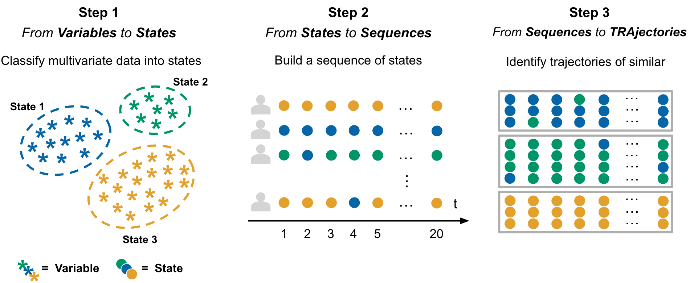
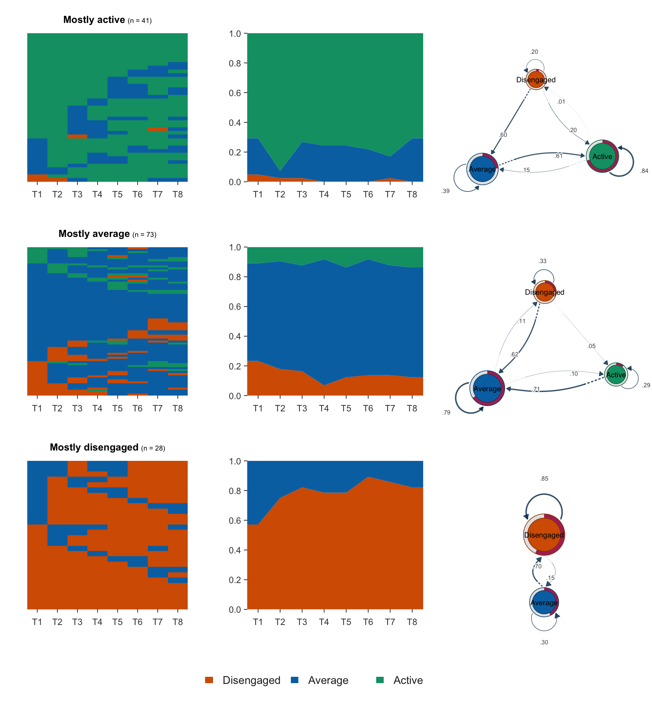

VaSSTra turns longitudinal multivariate data into interpretable states, sequences, and trajectory groups. The whole analysis is one call, every part of it is also a simple explicit step, and every automated decision is reported and recorded.
The method
VaSSTra utilizes a combination of person-based methods (to capture the latent states) along with life events methods to model the longitudinal process. In doing so, VaSSTra effectively leverages the benefits of both families of methods in mapping the patterns of longitudinal temporal dynamics. The method has three main steps that can be summarized as (1) identifying latent States from Variables, (2) modeling states as Sequences, and (3) identifying Trajectories within sequences. The three steps are depicted in the figure and described in detail below:

Package features
- State clustering: LPA, k-means, PAM, CLARA, FANNY, DIANA, and hierarchical linkages.
- Trajectory clustering: nine sequence distances with PAM or hierarchical linkages.
- Standardization: within time, within subject, global, or none.
- Evaluation metrics: silhouette, BIC and the full information-criterion family, entropy, and posterior probabilities.
-
Plots: state, sequence, and trajectory views, the combined grid, evaluation panels, and flow and transition networks via
cograph. - Tidy outputs: per subject, observation, state profile, or trajectory, plus transition tables and centralities.
- Automation with every decision reported, and an interactive Shiny app.
Installation
# install.packages("pak")
pak::pak("sonsoleslp/vasstra")One call
vasstra(data) needs nothing else: it detects the subject, time, and indicator roles from the attached metadata and selects the state and trajectory counts automatically, reporting each decision.
library(VaSSTra)
data("engagement", package = "VaSSTra")
vasstra(engagement)
#> Selected n_states = 5 (lpa, bic = 19008.964); see `diagnostics$selection`.
#> Selected n_trajectories = 3 (hamming + pam, silhouette = 0.222); see `diagnostics$selection`.
#> VaSSTra Analysis
#> 142 subjects | 8 times | 5 states | 3 trajectories
#> hamming + pam | silhouette 0.222States are estimated by latent profile analysis by default; state_method switches to k-means, PAM, or hierarchical clustering. Automatic selection compares 2 through 6 candidates. Here it settles on five states. Naming the states fixes the count instead, and naming any other decision takes it over. This is the fit the figure below is drawn from:
fit <- vasstra(
engagement,
state_labels = c("Disengaged", "Average", "Active"),
state_colors = c(Disengaged = "#D55E00", Average = "#0072B2", Active = "#009E73"),
dissimilarity = "lcs",
cluster_method = "ward.D2",
positive_states = "Active",
negative_states = "Disengaged",
trajectory_labels = c("Mostly active", "Mostly average", "Mostly disengaged")
)What you get
One fit describes each trajectory three ways at once: the transition network it follows, the sequences it groups, and how its state composition unfolds over time, all on a shared palette and state order.

Interactive app
launch_app() opens a Shiny application (requires the suggested shiny and DT packages) that runs the whole workflow interactively: load data, map roles, fit, inspect every tab, rename groups, and export the tidy tables.
VaSSTra::launch_app()Dependencies
mclust powers the default LPA state estimation, base R provides k-means and hierarchical clustering, cluster provides PAM, and Nestimate provides sequence distances, trajectory clustering, and all sequence plots. cograph is suggested, not required, and renders the flow and transition plots.
Method overview: VaSSTra chapter.